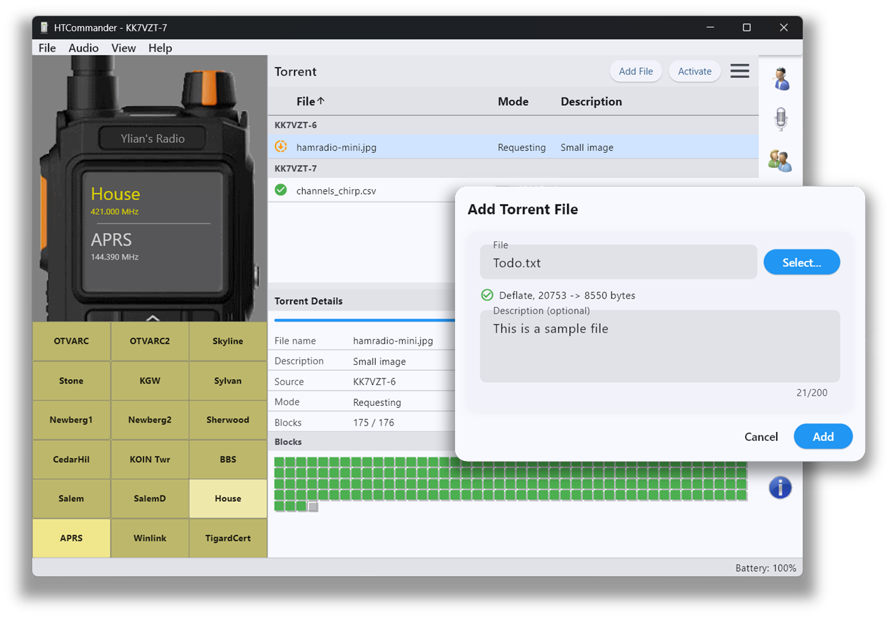

Compartir archivos de muchos a muchos por radio
HTCommander tiene su propio mini sistema de intercambio de archivos estilo BitTorrent, de muchos a muchos. Es exclusivo de HTCommander, así que para probarlo necesitarás dos o más radios ejecutando la app. Cada trama se envía como multidifusión de uno a muchos, de modo que muchas estaciones pueden participar al mismo tiempo.
Cómo usarlo
Selecciona una frecuencia libre y pulsa Activate para bloquear la radio y activar el modo torrent. Añade o arrastra y suelta los archivos que quieras compartir — puedes adjuntar una descripción de 200 caracteres a cada uno. El protocolo descubre otros nodos en la frecuencia e intercambia listados de archivos.
Para descargar un archivo, haz clic derecho en él y elige Request. Mientras otros solicitan archivos, tu nodo almacena automáticamente cada bloque recibido y ayuda a retransmitir bloques al grupo. Una vez que un archivo se ha descargado por completo, haz clic derecho en él y elige Save As… para conservar una copia.
Hecho para la paciencia
Esto sigue siendo muy experimental, con mejoras de temporización en camino. 1200 baudios no es rápido, pero el sistema está diseñado para funcionar en la radio durante mucho tiempo — cambia velocidad bruta por la capacidad de alimentar a toda una red desde un solo recurso compartido en lugar de ocupar el canal enlace por enlace.
Disponible en todas las plataformas: Windows, macOS, Linux, iOS, Android y web.